Chương 11: Đặc điểm hóa
Đặc điểm hóa
Trưởng chương: Anthony Sena & Daniel Prieto-Alhambra
Các cơ sở dữ liệu chăm sóc sức khỏe quan sát cung cấp một nguồn tài nguyên quý giá để hiểu các biến thể trong các quần thể dựa trên một loạt các đặc điểm. Đặc điểm hóa các quần thể thông qua việc sử dụng các thống kê mô tả là bước đầu tiên quan trọng trong việc tạo ra các giả thuyết về các yếu tố quyết định sức khỏe và bệnh tật. Trong chương này, chúng tôi đề cập đến các phương pháp đặc điểm hóa:
Đặc điểm hóa cấp cơ sở dữ liệu: cung cấp một tập hợp các thống kê tóm tắt cấp cao nhất để hiểu hồ sơ dữ liệu của một cơ sở dữ liệu trong toàn bộ.
Đặc điểm hóa nhóm thuần tập: mô tả một quần thể dựa trên lịch sử y tế tổng hợp của nó.
Các lộ trình điều trị: mô tả trình tự các can thiệp mà một người đã nhận trong một khoảng thời gian.
Tỷ lệ mắc: đo lường tỷ lệ xảy ra của một kết quả trong một quần thể trong một thời gian có nguy cơ.
Ngoại trừ đặc điểm hóa cấp cơ sở dữ liệu, các phương pháp này nhằm mô tả một quần thể tương đối so với một sự kiện được gọi là ngày chỉ số. Quần thể quan tâm này được xác định là một nhóm thuần tập như được mô tả trong chương 10. Nhóm thuần tập xác định ngày chỉ số cho mỗi người trong quần thể quan tâm. Sử dụng ngày chỉ số làm mốc, chúng tôi xác định thời gian trước ngày chỉ số là thời gian cơ sở. Ngày chỉ số và tất cả thời gian sau đó được gọi là thời gian hậu chỉ số.
Các trường hợp sử dụng cho đặc điểm hóa bao gồm lịch sử tự nhiên của bệnh, sử dụng điều trị và cải thiện chất lượng. Trong chương này sẽ mô tả các phương pháp đặc điểm hóa. Chúng tôi sẽ sử dụng một quần thể những người bị tăng huyết áp để chứng minh cách sử dụng ATLAS và R để thực hiện các nhiệm vụ đặc điểm hóa này.
Đặc điểm hóa cấp cơ sở dữ liệu
Trước khi chúng ta có thể trả lời bất kỳ câu hỏi đặc điểm hóa nào về một quần thể quan tâm, trước tiên chúng ta phải hiểu các đặc điểm của cơ sở dữ liệu mà chúng ta dự định sử dụng. Đặc điểm hóa cấp cơ sở dữ liệu tìm cách mô tả toàn bộ cơ sở dữ liệu dựa trên các xu hướng và phân phối theo thời gian. Đánh giá định lượng này về một cơ sở dữ liệu thường sẽ bao gồm các câu hỏi như:
Tổng số người trong cơ sở dữ liệu này là bao nhiêu?
Phân phối độ tuổi cho những người này là gì?
Những người này được quan sát trong bao lâu trong cơ sở dữ liệu này?
Tỷ lệ những người có {điều trị, tình trạng, thủ thuật, v.v.} được ghi lại/kê đơn theo thời gian là bao nhiêu?
Những thống kê mô tả cấp cơ sở dữ liệu này cũng giúp nhà nghiên cứu hiểu dữ liệu nào có thể bị thiếu trong cơ sở dữ liệu. Chương 15 đi sâu hơn vào chi tiết về chất lượng dữ liệu.
Đặc điểm hóa nhóm thuần tập
Đặc điểm hóa nhóm thuần tập mô tả các đặc điểm cơ sở và hậu chỉ số của những người trong một nhóm thuần tập. OHDSI tiếp cận đặc điểm hóa thông qua các thống kê mô tả về tất cả các tình trạng, tiếp xúc thuốc và thiết bị, thủ thuật và các quan sát lâm sàng khác có trong lịch sử của người đó. Chúng tôi cũng tóm tắt các đặc điểm xã hội học của các thành viên trong nhóm thuần tập tại ngày chỉ số. Phương pháp này cung cấp một bản tóm tắt hoàn chỉnh về nhóm thuần tập được quan tâm. Quan trọng là, điều này cho phép khám phá đầy đủ nhóm thuần tập với sự chú ý đến sự biến đổi trong dữ liệu đồng thời cho phép xác định các giá trị có khả năng bị thiếu.
Các phương pháp đặc điểm hóa nhóm thuần tập có thể được sử dụng cho các nghiên cứu sử dụng thuốc cấp cá nhân (DUS) để ước tính tỷ lệ lưu hành của các chỉ định và chống chỉ định trong số những người dùng một phương pháp điều trị nhất định. Việc phổ biến đặc điểm hóa nhóm thuần tập này là một thực tiễn tốt nhất được khuyến nghị cho các nghiên cứu quan sát như được chi tiết trong các hướng dẫn Tăng cường báo cáo các nghiên cứu quan sát trong dịch tễ học (STROBE). (von Elm và cộng sự, 2008)
Các lộ trình điều trị
Một phương pháp khác để đặc điểm hóa một quần thể là mô tả trình tự điều trị trong khoảng thời gian sau chỉ số (post-index). Ví dụ, Hripcsak và cộng sự (2016) đã sử dụng các tiêu chuẩn dữ liệu chung của OHDSI để tạo ra các thống kê mô tả nhằm đặc điểm hóa các lộ trình điều trị cho bệnh đái tháo đường loại 2, tăng huyết áp và trầm cảm. Bằng cách chuẩn hóa phương pháp phân tích này, Hripcsak và các đồng nghiệp đã có thể thực hiện cùng một phân tích trên khắp mạng lưới OHDSI để mô tả các đặc điểm của những quần thể quan tâm này.
Phân tích lộ trình nhằm mục đích tóm tắt các phương pháp điều trị (sự kiện) mà những người được chẩn đoán mắc một bệnh lý cụ thể đã nhận được kể từ lần kê đơn/cấp phát thuốc đầu tiên. Trong nghiên cứu này, các phương pháp điều trị được mô tả sau khi chẩn đoán bệnh đái tháo đường loại 2, tăng huyết áp và
trầm cảm tương ứng. Các sự kiện của mỗi người sau đó được tổng hợp thành một tập hợp các thống kê tóm tắt và được trực quan hóa cho từng bệnh lý và từng cơ sở dữ liệu.
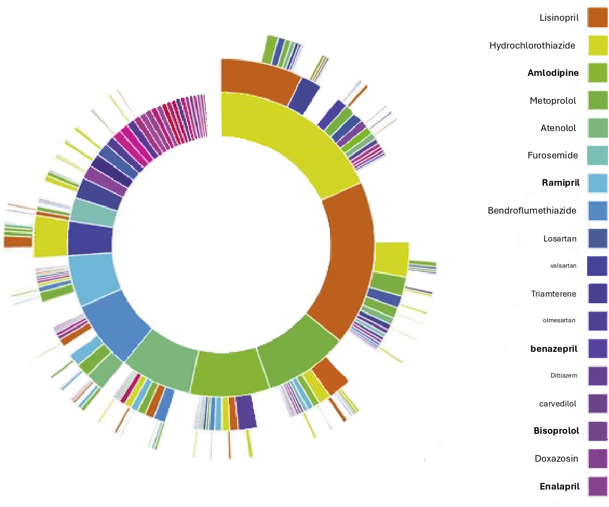
Hình 11.1: Trực quan hóa “sunburst” (biểu đồ mặt trời) về các lộ trình điều trị của OHDSI cho bệnh tăng huyết áp
Ví dụ, hình 11.1 thể hiện một quần thể những người bắt đầu điều trị tăng huyết áp. Vòng tròn đầu tiên ở trung tâm cho thấy tỷ lệ người dựa trên liệu pháp điều trị hàng đầu (first-line) của họ. Trong ví dụ này, Hydrochlorothiazide là liệu pháp hàng đầu phổ biến nhất cho quần thể này. Các ô kéo dài từ phần Hydrochlorothiazide đại diện cho các liệu pháp hàng thứ 2 và thứ 3 được ghi nhận cho những người trong nhóm thuần tập.
Phân tích lộ trình cung cấp bằng chứng quan trọng về việc sử dụng phương pháp điều trị trong một quần thể. Từ phân tích này, chúng ta có thể mô tả các liệu pháp hàng đầu phổ biến nhất được sử dụng, tỷ lệ người ngừng điều trị, chuyển đổi phương pháp điều trị hoặc tăng cường liệu pháp của họ. Sử dụng phân tích lộ trình, Hripcsak và cộng sự (2016) nhận thấy rằng metformin là loại thuốc được kê đơn phổ biến nhất cho bệnh đái tháo đường, qua đó xác nhận sự chấp nhận chung đối với khuyến nghị hàng đầu của thuật toán điều trị đái tháo đường của Hiệp hội Nội tiết Lâm sàng Hoa Kỳ. Ngoài ra, họ lưu ý rằng 10% bệnh nhân đái tháo đường, 24% bệnh nhân tăng huyết áp và 11% bệnh nhân trầm cảm đã tuân theo một lộ trình điều trị không chia sẻ với bất kỳ ai khác trong bất kỳ nguồn dữ liệu nào.
Theo thuật ngữ DUS cổ điển, các phân tích lộ trình điều trị bao gồm một số ước tính DUS cấp độ quần thể như tỷ lệ phổ biến khi sử dụng một hoặc nhiều loại thuốc trong một quần thể xác định, cũng như một số DUS cấp độ bệnh nhân bao gồm các thước đo về tính bền bỉ và chuyển đổi giữa các liệu pháp khác nhau.
Tỷ lệ mới mắc (Incidence)
Tỷ lệ mới mắc và tỷ lệ phần trăm mới mắc là các thống kê được sử dụng trong y tế công cộng để đánh giá sự xuất hiện của một kết cục mới trong một quần thể trong thời gian có nguy cơ (TAR). Hình 11.2 nhằm mục đích hiển thị các thành phần của một phép tính tỷ lệ mới mắc cho một cá nhân:
Trong hình 11.2, một người có một khoảng thời gian được quan sát trong dữ liệu, được biểu thị bằng thời gian bắt đầu và kết thúc quan sát của họ. Tiếp theo, người đó có một thời điểm gia nhập và rời khỏi nhóm thuần tập bằng cách đáp ứng một số tiêu chí đủ điều kiện. Cửa sổ thời gian có nguy cơ (TAR) sau đó biểu thị thời điểm chúng ta tìm cách hiểu sự xuất hiện của một kết cục. Nếu kết cục rơi vào khoảng TAR, chúng ta tính đó là một trường hợp mới mắc của kết cục đó.
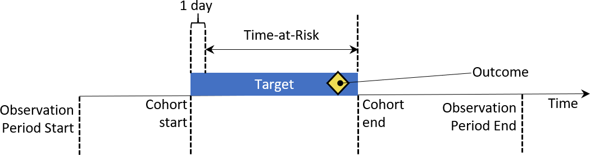
Hình 11.2: Góc nhìn cấp độ bệnh nhân về các thành phần tính toán tỷ lệ mới mắc. Trong ví dụ này, thời gian có nguy cơ được xác định bắt đầu một ngày sau khi bắt đầu nhóm thuần tập và kết thúc tại thời điểm kết thúc nhóm thuần tập.
Có hai số liệu để tính tỷ lệ mới mắc:
𝐼𝑛𝑐𝑖𝑑𝑒𝑛𝑐𝑒 𝑃 𝜏𝑜𝑝𝑜𝜏𝑡𝑖𝑜𝑛 =
# 𝑠ố 𝑛𝑔ườ𝑖 𝑡𝑟𝑜𝑛𝑔 𝑛ℎó𝑚 𝑡ℎ𝑢ầ𝑛 𝑡ậ𝑝 𝑐ó 𝑘ế𝑡 𝑞𝑢ả 𝑚ớ𝑖 𝑡𝑟𝑜𝑛𝑔 𝑇 𝐴𝑅 # 𝑠ố 𝑛𝑔ườ𝑖 𝑡𝑟𝑜𝑛𝑔 𝑛ℎó𝑚 𝑡ℎ𝑢ầ𝑛 𝑡ậ𝑝 𝑣ớ𝑖 𝑇 𝐴𝑅
Tỷ lệ mới mắc cung cấp thước đo về các kết cục mới trên mỗi người trong quần thể trong thời gian có nguy cơ. Nói cách khác, đây là tỷ lệ phần trăm của quần thể quan tâm đã phát triển kết cục trong một khung thời gian xác định.
𝐼𝑛𝑐𝑖𝑑𝑒𝑛𝑐𝑒 𝑅𝑎𝑡𝑒 =
# 𝑠ố 𝑛𝑔ườ𝑖 𝑡𝑟𝑜𝑛𝑔 𝑛ℎó𝑚 𝑡ℎ𝑢ầ𝑛 𝑡ậ𝑝 𝑐ó 𝑘ế𝑡 𝑐ụ𝑐 𝑚ớ𝑖 𝑡𝑟𝑜𝑛𝑔 𝑇 𝐴𝑅
𝑡ổ𝑛𝑔 𝑡ℎờ𝑖 𝑔𝑖𝑎𝑛 𝑐ó 𝑛𝑔𝑢𝑦 𝑐ơ 𝑐ủ𝑎 𝑐á𝑐 𝑛𝑔ườ𝑖 𝑡𝑟𝑜𝑛𝑔 𝑛ℎó𝑚 𝑡ℎ𝑢ầ𝑛 𝑡ậ𝑝
Tỷ suất mới mắc là thước đo số lượng các kết cục mới trong khoảng thời gian có nguy cơ tích lũy cho quần thể. Khi một người gặp kết cục trong khoảng TAR, sự đóng góp của họ vào tổng thời gian-người sẽ dừng lại tại thời điểm xảy ra sự kiện kết cục. Khoảng TAR tích lũy được gọi là thời gian-người và được biểu thị bằng ngày, tháng hoặc năm.
Khi được tính toán cho các liệu pháp, tỷ lệ mới mắc và tỷ suất mới mắc của việc sử dụng một liệu pháp nhất định là các DUS cấp độ quần thể cổ điển.
Đặc điểm hóa những người bị tăng huyết áp
Theo bản tóm tắt toàn cầu về tăng huyết áp của Tổ chức Y tế Thế giới (WHO) (Who, 2013), việc phát hiện sớm, điều trị đầy đủ và kiểm soát tốt bệnh tăng huyết áp mang lại những lợi ích đáng kể về sức khỏe và kinh tế. Bản tóm tắt của WHO cung cấp cái nhìn tổng quan về bệnh tăng huyết áp và đặc điểm hóa gánh nặng của căn bệnh này trên các quốc gia khác nhau. WHO cung cấp các thống kê mô tả về tăng huyết áp theo các khu vực địa lý, tầng lớp kinh tế - xã hội và giới tính.
Các nguồn dữ liệu quan sát cung cấp một cách để đặc điểm hóa các quần thể bị tăng huyết áp như cách WHO đã thực hiện. Trong các phần tiếp theo của chương này, chúng ta sẽ khám phá các cách
chúng ta sử dụng ATLAS và R để khám phá cơ sở dữ liệu nhằm hiểu cấu trúc của nó để nghiên cứu các quần thể bị tăng huyết áp. Sau đó, chúng ta sẽ sử dụng chính các công cụ này để mô tả lịch sử tự nhiên và các mô hình điều trị của các quần thể bị tăng huyết áp.
Đặc điểm hóa cơ sở dữ liệu trong ATLAS
Tại đây, chúng tôi trình bày cách sử dụng mô-đun nguồn dữ liệu trong ATLAS để khám phá các thống kê đặc điểm hóa cơ sở dữ liệu được tạo bằng ACHILLES nhằm tìm ra các đặc điểm cấp độ cơ sở dữ liệu
liên quan đến những người bị tăng huyết áp. Bắt đầu bằng cách nhấp vào trong thanh bên trái của ATLAS để bắt đầu. Trong danh sách thả xuống đầu tiên hiển thị trong ATLAS, hãy chọn cơ sở dữ liệu để khám phá. Tiếp theo, sử dụng danh sách thả xuống bên dưới cơ sở dữ liệu để bắt đầu khám phá các báo cáo. Để thực hiện việc này, hãy chọn Condition Occurrence (Sự kiện bệnh lý) từ danh sách thả xuống báo cáo, thao tác này sẽ hiển thị trực quan hóa dạng sơ đồ cây (treemap) của tất cả các bệnh lý có trong cơ sở dữ liệu:
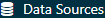
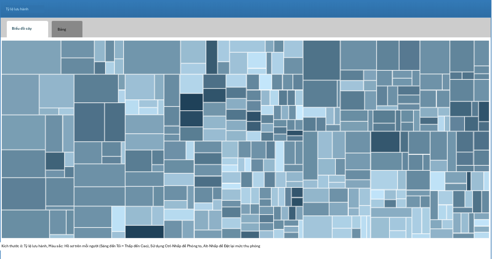
Hình 11.3: Nguồn dữ liệu Atlas: Sơ đồ cây về sự kiện bệnh lý
Để tìm kiếm một bệnh lý cụ thể, hãy nhấp vào tab Table (Bảng) để hiển thị danh sách đầy đủ các bệnh lý trong cơ sở dữ liệu với số lượng người, tỷ lệ phổ biến và số hồ sơ trên mỗi người. Sử dụng hộp lọc ở trên cùng, chúng ta có thể lọc các mục trong bảng dựa trên tên khái niệm có chứa thuật ngữ “hypertension” (tăng huyết áp):
Chúng ta có thể khám phá báo cáo chi tiết về một bệnh lý bằng cách nhấp vào một hàng. Trong trường hợp này, chúng ta sẽ chọn “essential hypertension” (tăng huyết áp vô căn) để xem phân tích chi tiết về xu hướng của bệnh lý đã chọn theo thời gian và theo giới tính, tỷ lệ phổ biến của bệnh lý theo tháng, loại hình được ghi nhận kèm theo bệnh lý và độ tuổi khi chẩn đoán lần đầu:
Bây giờ chúng ta đã xem xét các đặc điểm của cơ sở dữ liệu về sự hiện diện của các khái niệm tăng huyết áp và xu hướng theo thời gian, chúng ta cũng có thể khám phá các loại thuốc được sử dụng để điều trị cho những người bị tăng huyết áp. Quy trình thực hiện việc này tuân theo các bước tương tự ngoại trừ việc chúng ta sử dụng báo cáo Drug Era (Kỷ nguyên thuốc) để
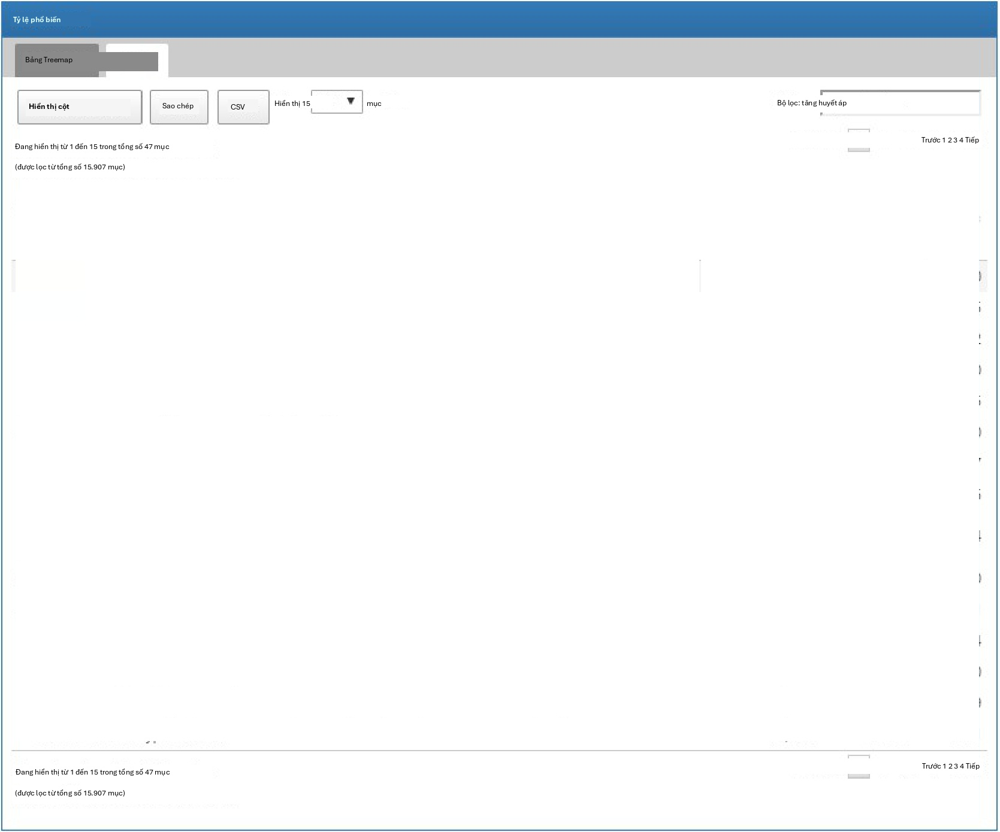
Hình 11.4: Nguồn dữ liệu Atlas: Các bệnh lý có từ “hypertension” được tìm thấy trong tên khái niệm
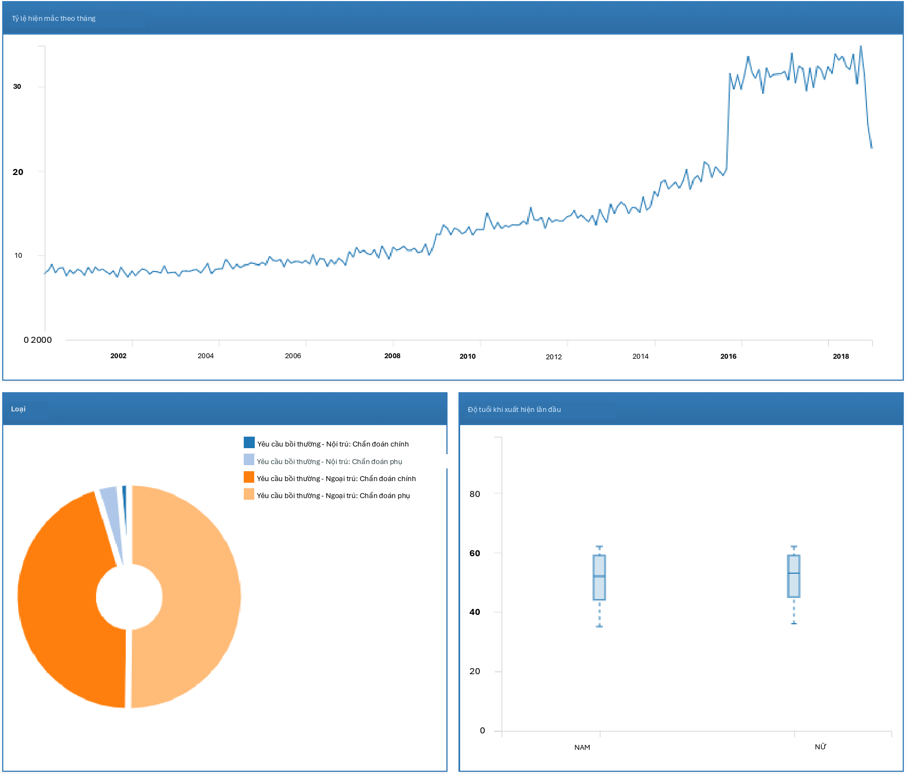
Hình 11.5: Nguồn dữ liệu Atlas: Báo cáo chi tiết về tăng huyết áp vô căn
xem xét các đặc điểm của thuốc được tóm tắt theo Thành phần RxNorm của chúng. Sau khi đã khám phá các đặc điểm của cơ sở dữ liệu để xem xét các mục quan tâm, chúng ta đã sẵn sàng tiến hành xây dựng các nhóm thuần tập để xác định những người bị tăng huyết áp cần đặc điểm hóa.
Đặc điểm hóa nhóm thuần tập trong ATLAS
Tại đây, chúng tôi trình bày cách sử dụng ATLAS để thực hiện đặc điểm hóa nhóm thuần tập quy mô lớn cho một vài nhóm thuần tập. Nhấp vào trong thanh bên trái của ATLAS và
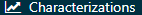
tạo một phân tích đặc điểm hóa mới. Đặt tên cho phân tích và lưu bằng cách sử dụng nút .
Thiết kế
Một phân tích đặc điểm hóa yêu cầu ít nhất một nhóm thuần tập và ít nhất một đặc điểm để đặc điểm hóa. Đối với ví dụ này, chúng ta sẽ sử dụng hai nhóm thuần tập. Nhóm thuần tập đầu tiên sẽ xác định những người bắt đầu điều trị tăng huyết áp làm ngày chỉ số với ít nhất một chẩn đoán tăng huyết áp trong năm trước đó. Chúng ta cũng sẽ yêu cầu những người trong nhóm thuần tập này có ít nhất một năm quan sát sau khi bắt đầu dùng thuốc tăng huyết áp (Phụ lục B.6). Nhóm thuần tập thứ hai giống hệt với nhóm thuần tập đầu tiên được mô tả với yêu cầu có ít nhất ba năm quan sát thay vì một (Phụ lục B.7).
Định nghĩa nhóm thuần tập
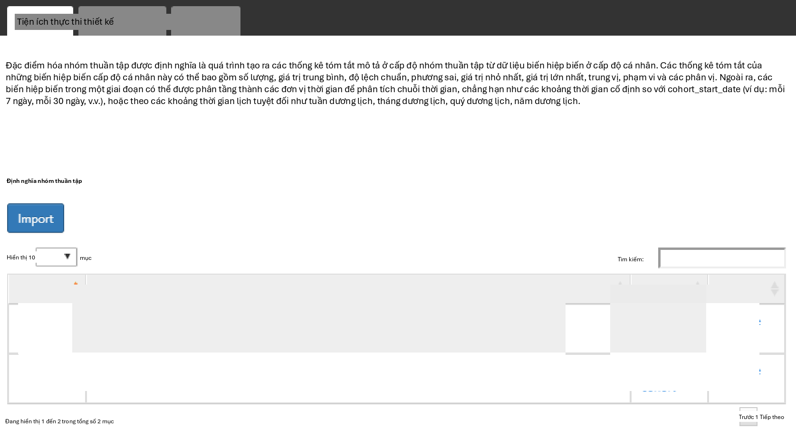
Hình 11.6: Tab thiết kế đặc điểm hóa - chọn định nghĩa nhóm thuần tập
Chúng tôi giả định rằng các nhóm thuần tập đã được tạo trong ATLAS như mô tả trong Chương 10. Nhấp vào và chọn các nhóm thuần tập như hiển thị trong hình 11.6. Tiếp theo, chúng ta sẽ xác định các đặc điểm để sử dụng cho việc đặc điểm hóa hai nhóm thuần tập này.
Chọn đặc điểm
ATLAS đi kèm với gần 100 phân tích đặc điểm cài sẵn được sử dụng để thực hiện đặc điểm hóa trên các lĩnh vực lâm sàng được mô hình hóa trong OMOP CDM. Mỗi phân tích đặc điểm cài sẵn này thực hiện các chức năng tổng hợp và tóm tắt trên các quan sát lâm sàng cho các nhóm thuần tập mục tiêu đã chọn. Các phép tính này cung cấp hàng nghìn đặc điểm tiềm năng để mô tả các đặc điểm nền và sau chỉ số của nhóm thuần tập. Về cơ bản, ATLAS đang sử dụng gói R FeatureExtraction của OHDSI để thực hiện việc đặc điểm hóa cho mỗi nhóm thuần tập. Chúng ta sẽ đề cập đến việc sử dụng FeatureExtraction và R chi tiết hơn trong phần tiếp theo.
Nhấp vào để chọn đặc điểm cần đặc điểm hóa. Dưới đây là danh sách các đặc điểm chúng ta sẽ sử dụng để đặc điểm hóa các nhóm thuần tập này:
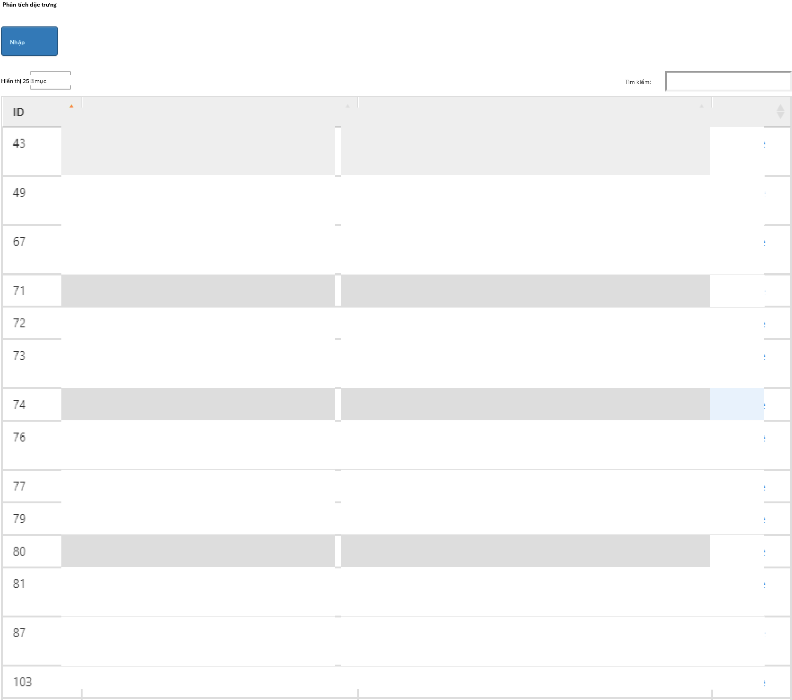
Hình 11.7: Tab thiết kế đặc điểm hóa - chọn đặc điểm.
Hình trên hiển thị danh sách các đặc điểm đã chọn cùng với mô tả về những gì mỗi đặc điểm sẽ đặc điểm hóa cho mỗi nhóm thuần tập. Các đặc điểm bắt đầu bằng tên “Demographics” (Nhân khẩu học) sẽ tính toán thông tin nhân khẩu học cho mỗi người tại ngày bắt đầu nhóm thuần tập. Đối với các đặc điểm bắt đầu bằng tên lĩnh vực (ví dụ: Visit, Procedure, Condition,
Drug, v.v.), chúng sẽ đặc điểm hóa tất cả các quan sát được ghi lại trong lĩnh vực đó. Mỗi đặc điểm lĩnh vực có bốn tùy chọn cửa sổ thời gian trước khi bắt đầu nhóm thuần tập, cụ thể là:
Bất kỳ thời điểm nào trước đó: sử dụng tất cả thời gian khả dụng trước khi bắt đầu nhóm thuần tập rơi vào khoảng thời gian quan sát của người đó
Dài hạn: 365 ngày trước đó cho đến và bao gồm cả ngày bắt đầu nhóm thuần tập.
Trung hạn: 180 ngày trước đó cho đến và bao gồm cả ngày bắt đầu nhóm thuần tập.
Ngắn hạn: 30 ngày trước đó cho đến và bao gồm cả ngày bắt đầu nhóm thuần tập.
Phân tích phân nhóm
Nếu chúng ta quan tâm đến việc tạo ra các đặc điểm khác nhau dựa trên giới tính thì sao? Chúng ta có thể sử dụng phần “subgroup analyses” (phân tích phân nhóm) để xác định các phân nhóm mới cần quan tâm để sử dụng trong quá trình đặc điểm hóa của mình.
Để tạo một phân nhóm, hãy nhấp vào và thêm tiêu chí của bạn cho việc tham gia phân nhóm. Bước này tương tự như các tiêu chí được sử dụng để xác định việc đăng ký vào nhóm thuần tập. Trong ví dụ này, chúng ta sẽ xác định một tập hợp các tiêu chí để xác định nữ giới trong các nhóm thuần tập của mình:
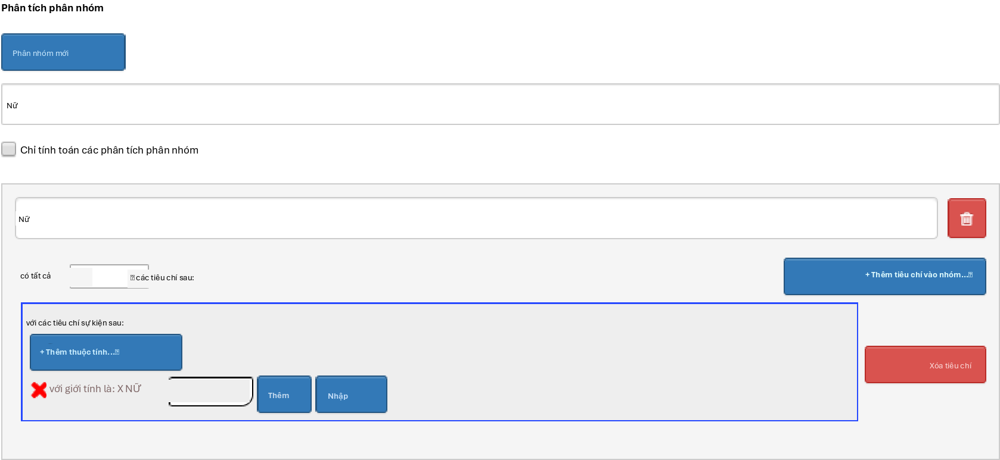
Hình 11.8: Thiết kế đặc điểm hóa với phân tích phân nhóm nữ.

Thực thi
Khi đã có thiết kế đặc điểm hóa, chúng ta có thể thực thi thiết kế này trên một hoặc nhiều cơ sở dữ liệu trong môi trường của mình. Điều hướng đến tab Executions (Thực thi) và nhấp vào nút Generate (Tạo) để bắt đầu phân tích trên một cơ sở dữ liệu:
Sau khi phân tích hoàn tất, chúng ta có thể xem các báo cáo bằng cách nhấp vào “All Executions” (Tất cả thực thi)
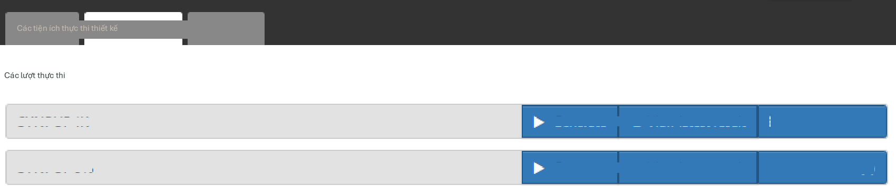
Hình 11.9: Thực thi thiết kế đặc điểm hóa - chọn nguồn CDM.
nút và từ danh sách các thực thi, chọn “View Reports” (Xem báo cáo). Ngoài ra, bạn có thể nhấp vào “View latest result” (Xem kết quả mới nhất) để xem kết quả thực thi cuối cùng.
Kết quả
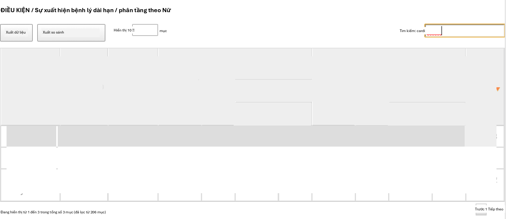
Hình 11.10: Kết quả đặc điểm hóa - sự kiện bệnh lý dài hạn.
Kết quả cung cấp chế độ xem dạng bảng về các đặc điểm khác nhau cho mỗi nhóm thuần tập được chọn trong thiết kế. Trong hình 11.10, một bảng cung cấp tóm tắt về tất cả các bệnh lý hiện diện trong hai nhóm thuần tập trong 365 ngày trước đó kể từ khi bắt đầu nhóm thuần tập. Mỗi biến hiệp biến có một số lượng và tỷ lệ phần trăm cho mỗi nhóm thuần tập và phân nhóm nữ mà chúng ta đã xác định trong mỗi nhóm thuần tập.
Chúng ta đã sử dụng hộp tìm kiếm để lọc kết quả nhằm xem tỷ lệ người bị rối loạn nhịp tim trong lịch sử của họ nhằm mục đích hiểu những chẩn đoán liên quan đến tim mạch nào được quan sát thấy trong các quần thể. Chúng ta có thể sử dụng liên kết Explore (Khám phá) bên cạnh khái niệm rối loạn nhịp tim để mở một cửa sổ mới với chi tiết hơn về khái niệm cho một nhóm thuần tập duy nhất như hiển thị trong hình 11.11:
Vì chúng ta đã đặc điểm hóa tất cả các khái niệm bệnh lý cho các nhóm thuần tập của mình, tùy chọn khám phá cho phép xem tất cả các khái niệm tổ tiên và hậu duệ cho khái niệm đã chọn, trong trường hợp này là rối loạn nhịp tim. Việc khám phá này cho phép chúng ta điều hướng hệ thống phân cấp các khái niệm để khám phá các bệnh tim mạch khác có thể xuất hiện đối với những người bị tăng huyết áp của chúng ta. Giống như trong chế độ xem tóm tắt, số lượng và tỷ lệ phần trăm được hiển thị.
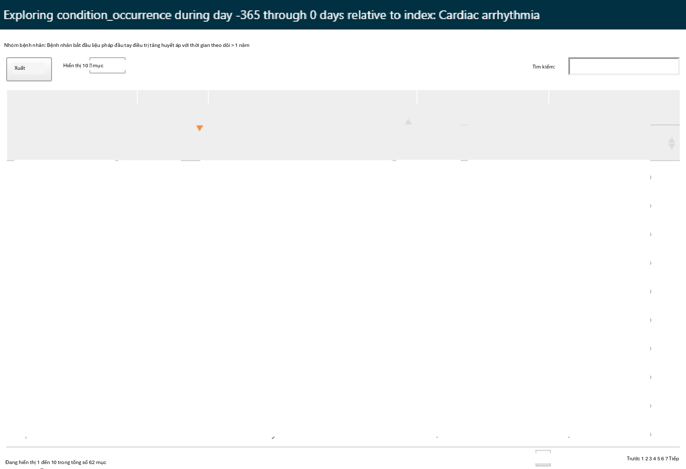
Hình 11.11: Kết quả đặc điểm hóa - khám phá một khái niệm duy nhất.
Chúng ta cũng có thể sử dụng cùng kết quả đặc điểm hóa để tìm các bệnh lý chống chỉ định cho một số phương pháp điều trị chống tăng huyết áp như phù mạch. Để làm điều này, chúng ta sẽ thực hiện theo các bước tương tự ở trên nhưng lần này tìm kiếm ‘edema’ (phù) như hiển thị trong hình 11.12:
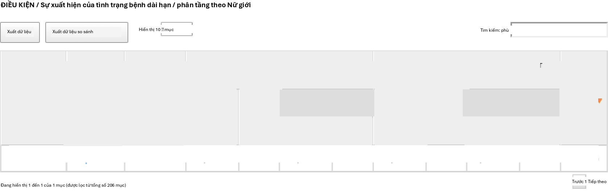
Hình 11.12: Kết quả đặc điểm hóa - khám phá một bệnh lý chống chỉ định.
Một lần nữa, chúng ta sẽ sử dụng tính năng khám phá để xem các đặc điểm của Phù trong quần thể tăng huyết áp nhằm tìm tỷ lệ phổ biến của phù mạch:
Tại đây chúng ta thấy rằng một phần của quần thể này có hồ sơ bị phù mạch trong năm trước khi bắt đầu dùng thuốc chống tăng huyết áp.
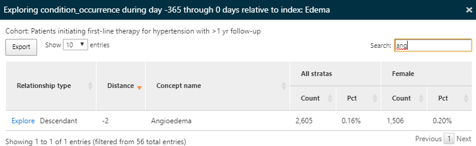
Hình 11.13: Kết quả đặc điểm hóa - chi tiết khám phá một bệnh lý chống chỉ định.
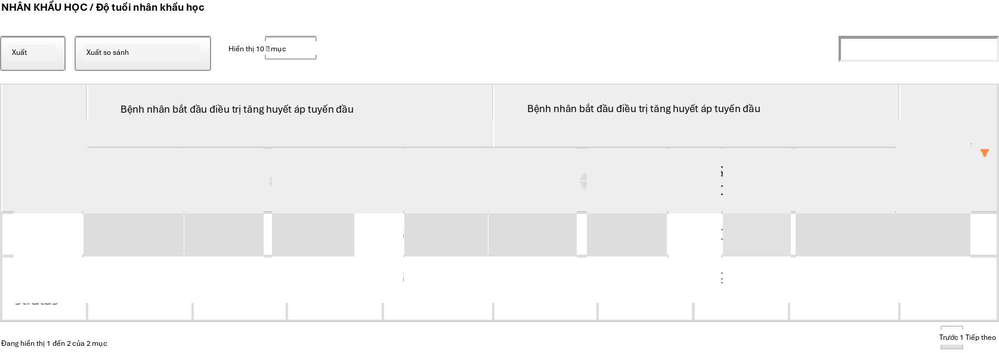
Hình 11.14: Kết quả đặc điểm hóa về độ tuổi cho mỗi nhóm thuần tập và phân nhóm.
Trong khi các biến hiệp biến lĩnh vực được tính toán bằng chỉ báo nhị phân (tức là hồ sơ mã có hiện diện trong khung thời gian trước đó hay không), một số biến cung cấp giá trị liên tục như độ tuổi của những người khi bắt đầu nhóm thuần tập. Trong ví dụ trên, chúng ta hiển thị độ tuổi cho 2 nhóm thuần tập được đặc điểm hóa, thể hiện bằng số lượng người, độ tuổi trung bình, độ tuổi trung vị và độ lệch chuẩn.
Xác định các đặc điểm tùy chỉnh
Ngoài các đặc điểm cài sẵn, ATLAS hỗ trợ khả năng cho phép các đặc điểm tùy chỉnh do người dùng xác định. Để thực hiện việc này, hãy nhấp vào mục menu bên trái Characterization (Đặc điểm hóa), sau đó nhấp vào tab Feature Analysis (Phân tích đặc điểm) và nhấp vào nút New Feature Analysis (Phân tích đặc điểm mới). Đặt tên cho đặc điểm tùy chỉnh và lưu nó bằng cách sử dụng nút .
Trong ví dụ này, chúng ta sẽ xác định một đặc điểm tùy chỉnh sẽ xác định số lượng người trong mỗi nhóm thuần tập có kỷ nguyên thuốc ức chế ACE trong lịch sử của họ sau khi bắt đầu nhóm thuần tập:
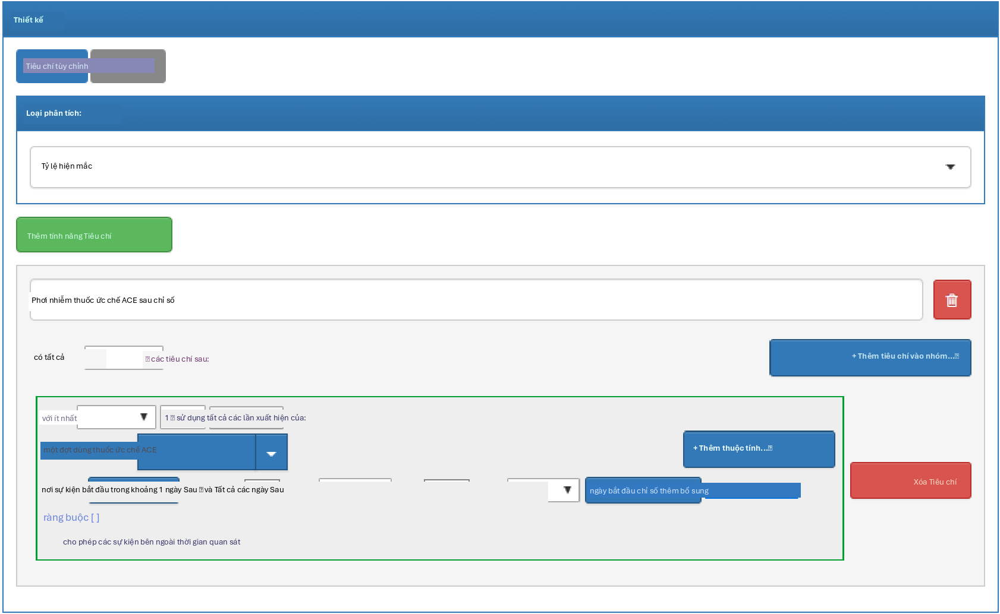
Hình 11.15: Định nghĩa đặc điểm tùy chỉnh trong ATLAS.
Các tiêu chí được xác định ở trên giả định rằng nó sẽ được áp dụng cho ngày bắt đầu nhóm thuần tập. Sau khi đã xác định các tiêu chí và lưu lại, chúng ta có thể áp dụng nó vào thiết kế đặc điểm hóa mà chúng ta đã tạo trong phần trước. Để thực hiện việc này, hãy mở thiết kế đặc điểm hóa và điều hướng đến phần Feature Analysis (Phân tích đặc điểm). Nhấp vào nút và từ menu chọn các đặc điểm tùy chỉnh mới. Chúng bây giờ sẽ xuất hiện trong danh sách đặc điểm cho thiết kế đặc điểm hóa. Như đã mô tả trước đó, chúng ta có thể thực thi thiết kế này trên cơ sở dữ liệu để tạo ra đặc điểm hóa cho đặc điểm tùy chỉnh này:
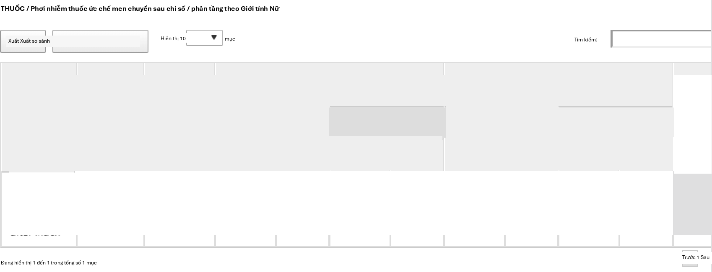
Hình 11.16: Hiển thị kết quả đặc điểm tùy chỉnh.
Đặc điểm hóa nhóm thuần tập trong R
Chúng ta cũng có thể chọn đặc điểm hóa các nhóm thuần tập bằng cách sử dụng R. Tại đây chúng tôi sẽ mô tả cách sử dụng gói R FeatureExtraction của OHDSI để tạo các đặc điểm nền (biến hiệp biến) cho các nhóm thuần tập tăng huyết áp của chúng ta. FeatureExtraction cung cấp cho người dùng khả năng xây dựng các biến hiệp biến theo ba cách:
Chọn tập hợp biến hiệp biến mặc định
Chọn từ một tập hợp các phân tích được chỉ định trước
Tạo một tập hợp các phân tích tùy chỉnh
FeatureExtraction tạo ra các biến hiệp biến theo hai cách riêng biệt: đặc điểm cấp độ bệnh nhân và đặc điểm tổng hợp. Các đặc điểm cấp độ bệnh nhân rất hữu ích cho các ứng dụng học máy. Trong phần này, chúng ta sẽ tập trung vào việc sử dụng các đặc điểm tổng hợp hữu ích cho việc tạo ra các biến hiệp biến nền mô tả nhóm thuần tập quan tâm. Ngoài ra, chúng ta sẽ tập trung vào hai cách xây dựng biến hiệp biến sau: phân tích chỉ định trước và tùy chỉnh, và để việc sử dụng tập hợp mặc định làm bài tập cho người đọc.
Khởi tạo nhóm thuần tập
Trước tiên, chúng ta cần khởi tạo nhóm thuần tập để đặc điểm hóa nó. Việc khởi tạo các nhóm thuần tập được mô tả trong Chương 10. Trong ví dụ này, chúng ta sẽ sử dụng những người bắt đầu liệu pháp hàng đầu cho bệnh tăng huyết áp với 1 năm theo dõi (Phụ lục B.6). Chúng tôi để việc đặc điểm hóa các nhóm thuần tập khác trong Phụ lục B làm bài tập cho người đọc. Chúng tôi sẽ giả định rằng nhóm thuần tập đã được khởi tạo trong một bảng có tên scratch.my_cohorts với ID định nghĩa nhóm thuần tập bằng 1.
Trích xuất dữ liệu
Trước tiên, chúng ta cần cho R biết cách kết nối với máy chủ. FeatureExtraction sử dụng gói DatabaseConnector, cung cấp một hàm có tên là createConnectionDetails. Gõ
?createConnectionDetails cho các cài đặt cụ thể cần thiết cho các hệ thống quản lý cơ sở dữ liệu (DBMS) khác nhau.
Ví dụ, người ta có thể kết nối với cơ sở dữ liệu PostgreSQL bằng mã này:
library(FeatureExtraction)
connDetails <- createConnectionDetails(dbms = "postgresql",
server = "localhost/ohdsi", user = "joe",
password = "supersecret")
cdmDbSchema <- "my_cdm_data" cohortsDbSchema <- "scratch" cohortsDbTable <- "my_cohorts" cdmVersion <- "5"
Bốn dòng cuối cùng xác định các biến cdmDbSchema, cohortsDbSchema, và cohortsDbTable, cũng như phiên bản CDM. Chúng ta sẽ sử dụng các biến này sau đó để cho R biết dữ liệu ở định dạng CDM nằm ở đâu, các nhóm thuần tập quan tâm đã được tạo ở đâu và phiên bản CDM nào được sử dụng. Lưu ý rằng đối với Microsoft SQL Server, các lược đồ cơ sở dữ liệu cần chỉ định cả cơ sở dữ liệu và lược đồ, ví dụ: cdmDbSchema <- "my_cdm_data.dbo".
Sử dụng các phân tích được chỉ định trước
Hàm createCovariateSettings cho phép người dùng chọn từ một tập hợp lớn các biến hiệp biến được xác định trước. Gõ ?createCovariateSettings để có cái nhìn tổng quan về các tùy chọn có sẵn. Ví dụ:
settings <- createCovariateSettings( useDemographicsGender = TRUE, useDemographicsAgeGroup = TRUE, useConditionOccurrenceAnyTimePrior = TRUE)
Điều này sẽ tạo ra các biến hiệp biến nhị phân cho giới tính, độ tuổi (theo nhóm tuổi 5 năm) và từng khái niệm được quan sát trong bảng condition_occurrence bất kỳ lúc nào trước (và bao gồm cả) ngày bắt đầu nhóm thuần tập.
Nhiều phân tích được chỉ định trước đề cập đến cửa sổ thời gian ngắn hạn, trung hạn hoặc dài hạn. Theo mặc định, các cửa sổ này được xác định là:
Dài hạn: 365 ngày trước đó cho đến và bao gồm cả ngày bắt đầu nhóm thuần tập.
Trung hạn: 180 ngày trước đó cho đến và bao gồm cả ngày bắt đầu nhóm thuần tập.
Ngắn hạn: 30 ngày trước đó cho đến và bao gồm cả ngày bắt đầu nhóm thuần tập. Tuy nhiên, người dùng có thể thay đổi các giá trị này. Ví dụ:
settings <- createCovariateSettings(useConditionEraLongTerm = TRUE,
useConditionEraShortTerm = TRUE,
useDrugEraLongTerm = TRUE, useDrugEraShortTerm = TRUE, longTermStartDays = -180,
shortTermStartDays = -14,
endDays = -1)
Điều này xác định lại cửa sổ dài hạn là 180 ngày trước đó cho đến (nhưng không bao gồm) ngày bắt đầu nhóm thuần tập và xác định lại cửa sổ ngắn hạn là 14 ngày trước đó cho đến (nhưng không bao gồm) ngày bắt đầu nhóm thuần tập.
Một lần nữa, chúng ta cũng có thể chỉ định ID khái niệm nào nên hoặc không nên được sử dụng để xây dựng các biến hiệp biến:
settings <- createCovariateSettings(useConditionEraLongTerm = TRUE,
useConditionEraShortTerm = TRUE, useDrugEraLongTerm = TRUE, useDrugEraShortTerm = TRUE, longTermStartDays = -180,
shortTermStartDays = -14,
endDays = -1,
The use of aggregated = TRUE for all of the examples above indicate to Feature-Extraction to provide summary statistics. Excluding this flag will compute covari-ates for each person in the cohort.
Tạo các biến hiệp biến tổng hợp
Khối mã sau đây sẽ tạo ra các thống kê tổng hợp cho một nhóm thuần tập:
covariateSettings <- createDefaultCovariateSettings()
covariateData2 <- getDbCovariateData( connectionDetails = connectionDetails, cdmDatabaseSchema = cdmDatabaseSchema, cohortDatabaseSchema = resultsDatabaseSchema, cohortTable = "cohorts_of_interest",
cohortId = 1,
covariateSettings = covariateSettings, aggregated = TRUE)
summary(covariateData2)
Và đầu ra sẽ trông tương tự như sau:
## Tóm tắt đối tượng CovariateData ##
## Số lượng biến hiệp biến: 41330
## Số lượng giá trị biến hiệp biến khác không: 41330
Định dạng đầu ra
Hai thành phần chính của đối tượng covariateData tổng hợp là covariates
và covariatesContinuous tương ứng cho các biến hiệp biến nhị phân và liên tục:
covariateData2$covariates covariateData2$covariatesContinuous
Các biến hiệp biến tùy chỉnh
FeatureExtraction cũng cung cấp khả năng xác định và sử dụng các biến hiệp biến tùy chỉnh. Các chi tiết này là một chủ đề nâng cao và được đề cập trong tài liệu người dùng: http://ohdsi.github.io/FeatureExtraction/.
Các lộ trình nhóm thuần tập trong ATLAS
Mục tiêu của phân tích lộ trình là hiểu trình tự các phương pháp điều trị trong một hoặc nhiều nhóm thuần tập quan tâm. Các phương pháp được áp dụng dựa trên thiết kế được Hripcsak và cộng sự (2016) báo cáo. Các phương pháp này đã được khái quát hóa và hệ thống hóa thành một tính năng có tên là Cohort Pathways (Lộ trình nhóm thuần tập) trong ATLAS.
Các lộ trình nhóm thuần tập nhằm cung cấp các khả năng phân tích để tóm tắt các sự kiện sau ngày bắt đầu nhóm thuần tập của một hoặc nhiều nhóm thuần tập mục tiêu. Để thực hiện việc này, chúng ta tạo một tập hợp các nhóm thuần tập để xác định các sự kiện lâm sàng quan tâm cho quần thể mục tiêu được gọi là nhóm thuần tập sự kiện (event cohort). Tập trung vào việc điều này có thể trông như thế nào đối với một người trong nhóm thuần tập mục tiêu:
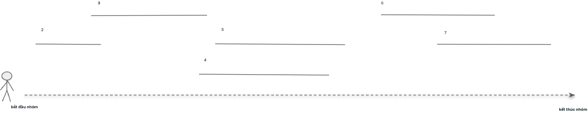
Hình 11.17: Phân tích lộ trình trong bối cảnh của một cá nhân.
Trong hình 11.17, người đó là một phần của nhóm thuần tập mục tiêu với ngày bắt đầu và ngày kết thúc được xác định. Sau đó, các đoạn đường được đánh số đại diện cho nơi người đó cũng được xác định trong một nhóm thuần tập sự kiện trong một khoảng thời gian. Các nhóm thuần tập sự kiện cho phép chúng ta mô tả bất kỳ sự kiện lâm sàng
nào quan tâm được thể hiện trong CDM sao cho chúng ta không bị hạn chế trong việc tạo lộ trình cho một lĩnh vực hoặc khái niệm duy nhất.
Để bắt đầu, hãy nhấp vào trong thanh bên trái của ATLAS để tạo một nghiên cứu lộ trình nhóm thuần tập mới. Cung cấp một tên mô tả và nhấn nút lưu.
Thiết kế
Để bắt đầu, chúng ta sẽ tiếp tục sử dụng các nhóm thuần tập bắt đầu liệu pháp hàng đầu cho bệnh tăng huyết áp với 1 và 3 năm theo dõi (Phụ lục B.6, B.7). Sử dụng nút để nhập 2 nhóm thuần tập.
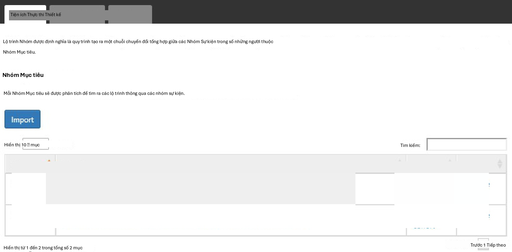
Hình 11.18: Phân tích lộ trình với các nhóm thuần tập mục tiêu đã chọn.
Tiếp theo, chúng ta sẽ xác định các nhóm thuần tập sự kiện bằng cách tạo một nhóm thuần tập cho mỗi loại thuốc tăng huyết áp hàng đầu quan tâm. Đối với điều này, chúng ta sẽ bắt đầu bằng cách tạo một nhóm thuần tập những người dùng thuốc ức chế ACE và xác định ngày kết thúc nhóm thuần tập là ngày kết thúc tiếp xúc liên tục. Chúng ta sẽ làm tương tự cho 8 loại thuốc tăng huyết áp khác và lưu ý rằng các định nghĩa này được tìm thấy trong Phụ lục B.8-
B.16. Sau khi hoàn tất, hãy sử dụng nút để nhập các nhóm này vào phần Event Cohort (Nhóm thuần tập sự kiện) của thiết kế lộ trình:
Khi hoàn tất, thiết kế của bạn sẽ trông giống như thiết kế ở trên. Tiếp theo, chúng ta sẽ cần quyết định một vài cài đặt phân tích bổ sung:
Cửa sổ kết hợp: Cài đặt này cho phép bạn xác định một khoảng thời gian, tính bằng ngày, trong đó sự chồng lấp giữa các sự kiện được coi là một sự kết hợp của các sự kiện. Ví dụ, nếu hai loại thuốc được đại diện bởi 2 nhóm thuần tập sự kiện (nhóm thuần tập sự kiện 1 và nhóm thuần tập sự kiện 2) chồng lấp trong cửa sổ kết hợp, thuật toán lộ trình sẽ kết hợp chúng thành “nhóm thuần tập sự kiện 1 + nhóm thuần tập sự kiện 2”.
Số lượng ô tối thiểu: Các nhóm thuần tập sự kiện có ít người hơn số lượng này sẽ bị kiểm duyệt (loại bỏ) khỏi đầu ra để bảo vệ quyền riêng tư.
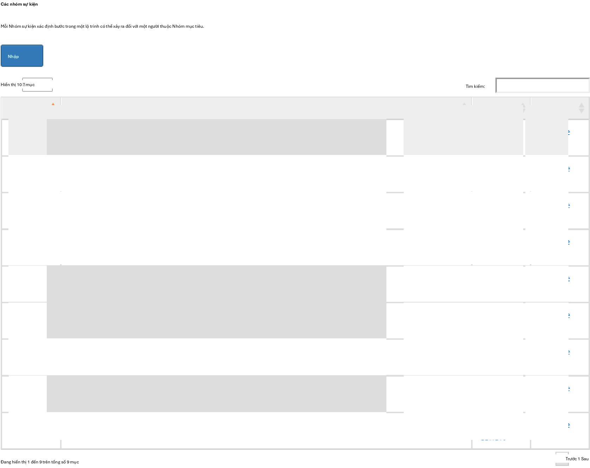
Hình 11.19: Các nhóm thuần tập sự kiện cho thiết kế lộ trình để bắt đầu liệu pháp chống tăng huyết áp hàng đầu.
- Độ dài lộ trình tối đa: Điều này đề cập đến số lượng sự kiện liên tiếp tối đa cần xem xét cho phân tích.
Thực thi
Khi đã có thiết kế phân tích lộ trình, chúng ta có thể thực thi thiết kế này trên một hoặc nhiều cơ sở dữ liệu trong môi trường của mình. Điều này hoạt động theo cùng cách chúng ta đã mô tả cho đặc điểm hóa nhóm thuần tập trong ATLAS. Sau khi hoàn tất, chúng ta có thể xem lại kết quả của phân tích.
Xem kết quả
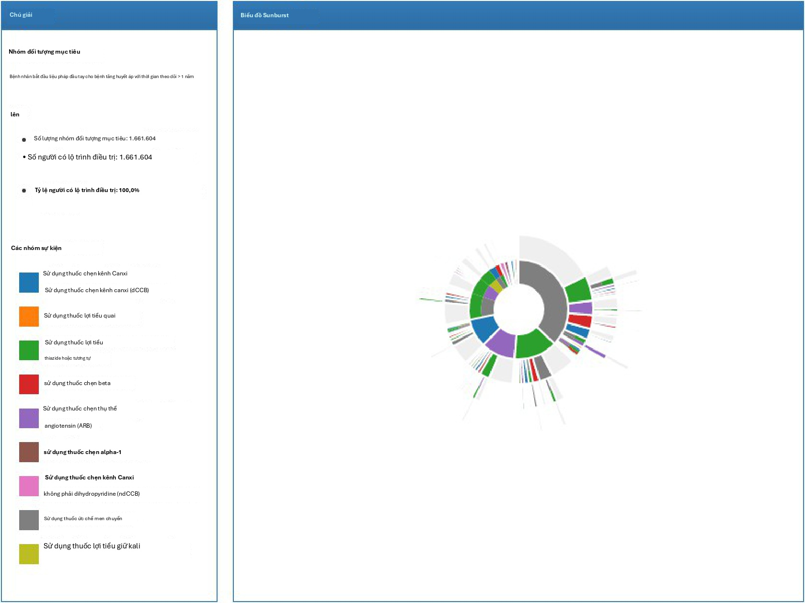
Hình 11.20: Chú giải kết quả lộ trình và trực quan hóa sunburst.
Kết quả của một phân tích lộ trình được chia thành 3 phần: Phần chú giải hiển thị tổng số người trong nhóm thuần tập mục tiêu cùng với số người có 1 hoặc nhiều sự kiện trong phân tích lộ trình. Bên dưới phần tóm tắt đó là các chỉ định màu sắc cho mỗi nhóm thuần tập xuất hiện trong biểu đồ sunburst ở phần trung tâm.
Biểu đồ sunburst là một hình thức trực quan hóa thể hiện các lộ trình sự kiện khác nhau mà mọi người đã thực hiện theo thời gian. Tâm của biểu đồ đại diện cho việc gia nhập nhóm thuần tập và vòng tròn được mã hóa màu đầu tiên cho thấy tỷ lệ người trong mỗi nhóm thuần tập sự kiện. Trong ví dụ của chúng ta, tâm của vòng tròn đại diện cho những người bị tăng huyết áp bắt đầu liệu pháp hàng đầu. Sau đó, vòng tròn đầu tiên trong biểu đồ sunburst cho thấy tỷ lệ người đã bắt đầu một loại
liệu pháp hàng đầu được xác định bởi các nhóm thuần tập sự kiện (tức là thuốc ức chế ACE, thuốc chẹn thụ thể Angiotensin, v.v.). Tập hợp vòng tròn thứ hai đại diện cho nhóm thuần tập sự kiện thứ 2 cho những người này. Trong một số chuỗi sự kiện nhất định, một người có thể không bao giờ có nhóm thuần tập sự kiện thứ 2 được quan sát trong dữ liệu và tỷ lệ đó được thể hiện bằng phần màu xám của vòng tròn.
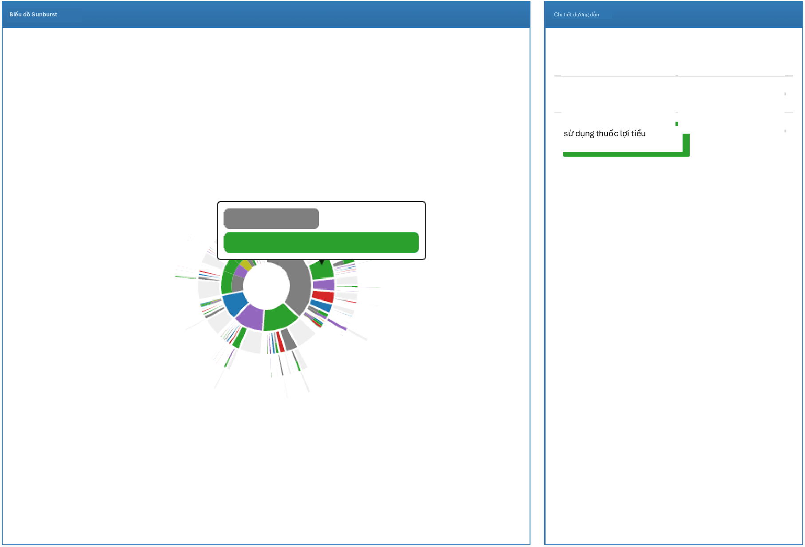
Hình 11.21: Kết quả lộ trình hiển thị chi tiết lộ trình.
Nhấp vào một phần của biểu đồ sunburst sẽ hiển thị chi tiết lộ trình ở bên phải. Tại đây, chúng ta có thể thấy rằng tỷ lệ lớn nhất những người trong nhóm thuần tập mục tiêu của chúng ta đã bắt đầu liệu pháp hàng đầu bằng thuốc ức chế ACE và từ nhóm đó, một tỷ lệ nhỏ hơn đã bắt đầu dùng Thiazide hoặc thuốc lợi tiểu thiazide.
Phân tích tỷ lệ mới mắc trong ATLAS
Trong một phép tính tỷ lệ mới mắc, chúng ta mô tả: trong số những người trong nhóm thuần tập mục tiêu, ai đã trải qua nhóm thuần tập kết cục trong thời gian có nguy cơ. Tại đây, chúng ta sẽ thiết kế một phân tích tỷ lệ mới mắc để đặc điểm hóa các kết cục phù mạch và nhồi máu cơ tim cấp tính trong số những người dùng thuốc ức chế ACE (ACEi) mới và thuốc lợi tiểu Thiazide và thiazide-like (THZ). Chúng ta sẽ đánh giá các kết cục này trong thời gian TAR mà một người tiếp xúc với thuốc. Ngoài ra, chúng ta sẽ thêm một kết cục tiếp xúc thuốc với thuốc chẹn thụ thể Angiotensin (ARBs) để đo lường tỷ lệ mới mắc của việc sử dụng ARBs mới trong thời gian tiếp xúc với các nhóm thuần tập mục tiêu (ACEi và THZ). Định nghĩa kết cục này cung cấp sự hiểu biết về cách ARBs được sử dụng trong các quần thể mục tiêu.
Để bắt đầu, hãy nhấp vào trong thanh bên trái của ATLAS để tạo một tỷ lệ mới mắc
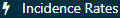
phân tích mới. Cung cấp một tên mô tả và nhấn nút lưu .
Thiết kế
Chúng tôi giả định rằng các nhóm thuần tập được sử dụng trong ví dụ này đã được tạo trong ATLAS như mô tả trong Chương 10. Phụ lục cung cấp đầy đủ các định nghĩa về các nhóm thuần tập mục tiêu (Phụ lục B.2, B.5) và các nhóm thuần tập kết cục (Phụ lục B.4, B.3, B.9).
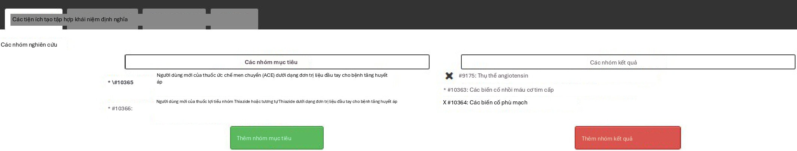
Hình 11.22: Định nghĩa mục tiêu và kết cục của tỷ suất mới mắc.
Trên tab định nghĩa, nhấp để chọn nhóm thuần tập Người dùng thuốc ức chế ACE mới và nhóm thuần tập Người dùng thuốc lợi tiểu Thiazide hoặc Thiazide-like mới. Đóng hộp thoại để xem rằng các nhóm thuần tập này đã được thêm vào thiết kế. Tiếp theo, chúng ta thêm các nhóm thuần tập kết cục của mình bằng cách nhấp vào và từ hộp thoại, chọn các nhóm thuần tập kết cục của các sự kiện nhồi máu cơ tim cấp tính, các sự kiện phù mạch và việc sử dụng thuốc chẹn thụ thể Angiotensin (ARB). Một lần nữa, hãy đóng cửa sổ để xem rằng các nhóm thuần tập này đã được thêm vào phần nhóm thuần tập kết cục của thiết kế.
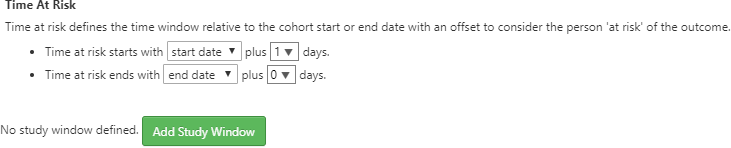
Hình 11.23: Định nghĩa mục tiêu và kết cục của tỷ suất mới mắc.
Tiếp theo, chúng ta sẽ xác định cửa sổ thời gian có nguy cơ cho phân tích. Như hiển thị ở trên, cửa sổ thời gian có nguy cơ được xác định tương đối so với ngày bắt đầu và ngày kết thúc nhóm thuần tập. Tại đây, chúng ta sẽ xác định thời gian có nguy cơ bắt đầu là 1 ngày sau khi bắt đầu nhóm thuần tập cho các nhóm thuần tập mục tiêu của chúng ta. Tiếp theo, chúng ta sẽ xác định thời gian có nguy cơ kết thúc tại ngày kết thúc nhóm thuần tập. Trong trường hợp này, định nghĩa của các nhóm thuần tập ACEi và THZ có ngày kết thúc nhóm thuần tập khi việc tiếp xúc với thuốc kết thúc.
ATLAS cũng cung cấp một cách để phân tầng các nhóm thuần tập mục tiêu như một phần của đặc điểm kỹ thuật phân tích:
Để thực hiện việc này, hãy nhấp vào nút New Stratify Criteria (Tiêu chí phân tầng mới) và làm theo các bước tương tự được mô tả trong Chương 11. Bây giờ chúng ta đã hoàn thành thiết kế, chúng ta có thể chuyển sang thực thi thiết kế của mình trên một hoặc nhiều cơ sở dữ liệu.
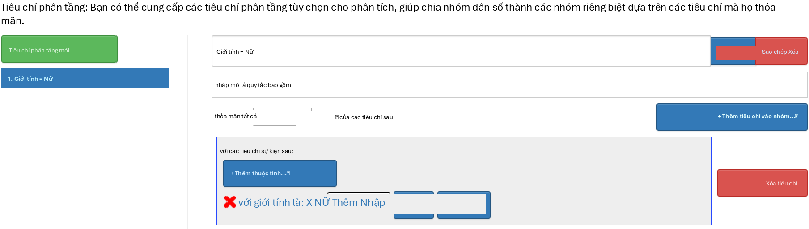
Hình 11.24: Định nghĩa phân tầng tỷ suất mới mắc cho nữ giới.
Thực thi
Nhấp vào tab Generation (Tạo) và sau đó nhấn nút để hiển thị danh sách các cơ sở dữ liệu để sử dụng nhằm thực thi phân tích:
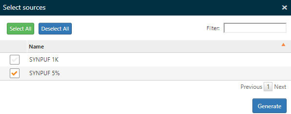
Hình 11.25: Thực thi phân tích tỷ suất mới mắc.
Chọn một hoặc nhiều cơ sở dữ liệu và nhấp vào nút Generate (Tạo) để bắt đầu phân tích nhằm phân tích tất cả các kết hợp mục tiêu và kết cục được chỉ định trong thiết kế.
Xem kết quả
Trên tab Generation (Tạo), phần trên của màn hình cho phép bạn chọn mục tiêu và kết cục để sử dụng khi xem kết quả. Ngay bên dưới phần này là tóm tắt về tỷ lệ mới mắc được hiển thị cho mỗi cơ sở dữ liệu được sử dụng trong phân tích.
Chọn nhóm thuần tập mục tiêu là người dùng ACEi và Nhồi máu cơ tim cấp tính (AMI) từ các danh sách thả xuống tương ứng. Nhấp vào nút để hiển thị kết quả phân tích tỷ lệ mới mắc:
Tóm tắt cho cơ sở dữ liệu hiển thị tổng số người trong nhóm thuần tập được quan sát trong thời gian TAR cùng với tổng số trường hợp. Tỷ lệ cho thấy số
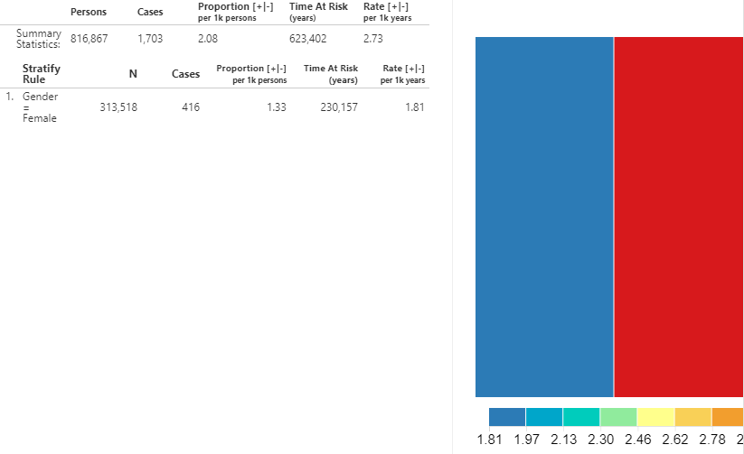
Hình 11.26: Đầu ra phân tích tỷ suất mới mắc - Người dùng ACEi mới với kết cục AMI.
trường hợp trên 1000 người. Thời gian có nguy cơ, tính bằng năm, được tính cho nhóm thuần tập mục tiêu. Tỷ suất mới mắc được biểu thị là số trường hợp trên 1000 năm-người.
Chúng ta cũng có thể xem các số liệu tỷ lệ mới mắc cho các phân tầng mà chúng ta đã xác định trong thiết kế. Các số liệu tương tự được đề cập ở trên được tính toán cho mỗi phân tầng. Ngoài ra, trực quan hóa dạng sơ đồ cây cung cấp biểu diễn về tỷ lệ của mỗi phân tầng được đại diện bởi các khu vực được đóng khung. Màu sắc đại diện cho tỷ suất mới mắc như hiển thị trong thang đo dọc theo phía dưới.
Chúng ta có thể thu thập thông tin tương tự để xem tỷ lệ mới mắc của việc sử dụng ARBs mới trong quần thể ACEi. Sử dụng danh sách thả xuống ở trên cùng, thay đổi kết cục thành sử dụng ARBs và nhấp vào nút để xem chi tiết.
Như đã hiển thị, các số liệu được tính toán là giống nhau nhưng cách diễn giải lại khác vì đầu vào (sử dụng ARB) tham chiếu đến một ước tính sử dụng thuốc thay vì một kết cục sức khỏe.
Tóm tắt

OHDSI offers tools to characterize an entire database, or a cohort of interest.
Cohort characterization describes a cohort of interest during the time preced-ing the index date (baseline) and the time after index (post-index).
ATLAS’s characterization module and the OHDSI Methods Library provide
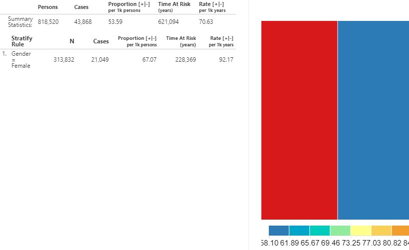
Hình 11.27: Tỷ suất mới mắc - Người dùng ACEi mới nhận điều trị ARBs trong thời gian tiếp xúc ACEi.
the capability to calculate baseline characteristics for multiple time windows.
– ATLAS’s pathways and incidence rate modules provide descriptive statistics during the post-index time period.
Bài tập
Điều kiện tiên quyết
Đối với các bài tập này, cần có quyền truy cập vào một phiên bản ATLAS. Bạn có thể sử dụng phiên bản tại http://atlas-demo.ohdsi.org, hoặc bất kỳ phiên bản nào khác mà bạn có quyền truy cập.
Bài tập 11.1. Chúng ta muốn hiểu cách celecoxib được sử dụng trong thế giới thực. Để bắt đầu, chúng ta muốn hiểu cơ sở dữ liệu có dữ liệu gì về loại thuốc này. Sử dụng mô-đun Nguồn dữ liệu ATLAS để tìm thông tin về celecoxib.
Bài tập 11.2. Chúng ta muốn hiểu rõ hơn về lịch sử tự nhiên của bệnh đối với người dùng celecoxib. Tạo một nhóm thuần tập đơn giản gồm những người dùng celecoxib mới sử dụng thời gian rửa trôi (washout) 365 ngày (xem Chương 10 để biết chi tiết về cách thực hiện việc này), và sử dụng ATLAS để tạo một đặc điểm hóa cho nhóm thuần tập này, hiển thị các bệnh lý đồng mắc và các lần tiếp xúc thuốc.
Bài tập 11.3. Chúng ta quan tâm đến việc hiểu tần suất xuất hiện chảy máu đường tiêu hóa (GI) bất kỳ lúc nào sau khi mọi người bắt đầu điều trị bằng celecoxib. Tạo một nhóm thuần tập các sự kiện chảy máu GI, được định nghĩa đơn giản là bất kỳ sự xuất hiện nào của khái niệm 192671 (“Gastrointestinal hemorrhage” - Xuất huyết tiêu hóa) hoặc bất kỳ hậu duệ nào của nó. Tính tỷ suất mới mắc của các sự kiện GI này sau khi bắt đầu dùng celecoxib, sử dụng nhóm thuần tập tiếp xúc được xác định trong bài tập trước.
Các câu trả lời gợi ý có thể được tìm thấy trong Phụ lục E.7.